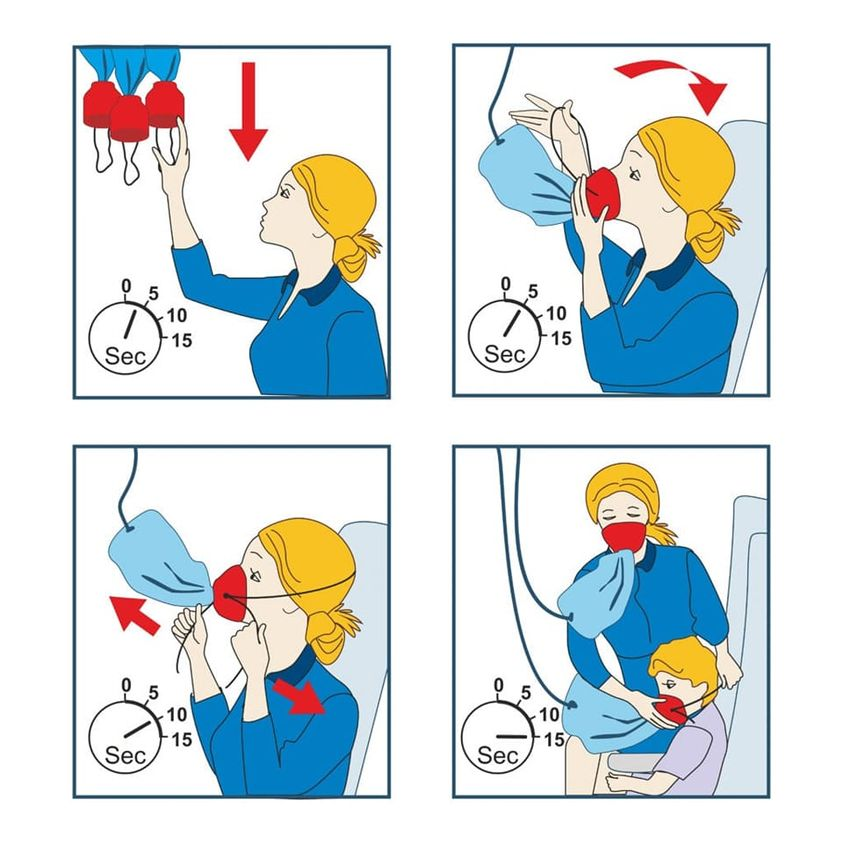

Mobile uploads
This can get out of hand. I know many well-off people who always put themselves first.
But I also know many homeless and poor people who put themselves last.
If you are drowning please think about yourself from time to time.
I often say that if everyone would just take care of their own family most of society's problems would be solved. YOU are part of your family. Sometimes "just" taking care of yourself is what's needed. It's more than enough.